As the concept of Internet of Things, distributed sensors send data they gathered to a centralized database, probably by wireless connections. These data are collected for analysis, producing results for subsequent usages, such as for users to review. In this experimental project, which illustrates an example for the above, photos with GPS information are representing the data sent by sensors, which smartphones (iPhone) are used to represent.
In practical, an iOS App is developed to accomplish this experiment by capturing photo with camera on the device and uploading the photo, along with an GPS location information, to a centralized database. Each photo belongs to a personal account, which is determined by the user using the device. To complete the concept, this app also acts as a tool for users to review the analysis results, providing function for users to query photos by locations. The detail are described below.
This app is designed with 3 tabbed pages, which are Map Page, Personal Photos Page, and More Page. These pages are described below. By clicking the button “Take a photo” on the upper right corner of any page, user can take a photo immediately or choose a picture from photo library, and upload the captured/chosen photo, along with current GPS location information, to the centralized database.
| 1.Click “Take a photo” | 2.Take a picture | 3.Confirm | 4.Upload |
|---|---|---|---|
| 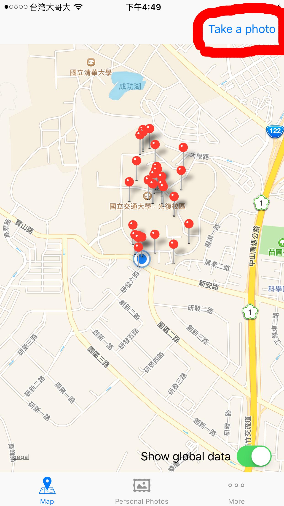 | 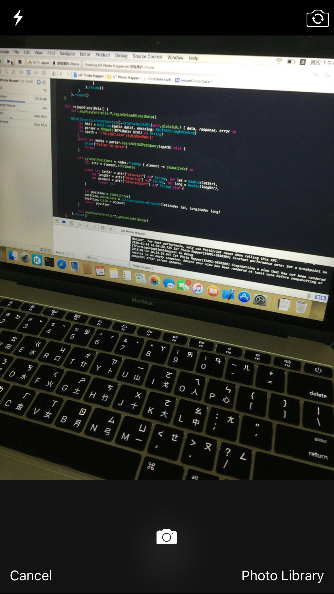 | 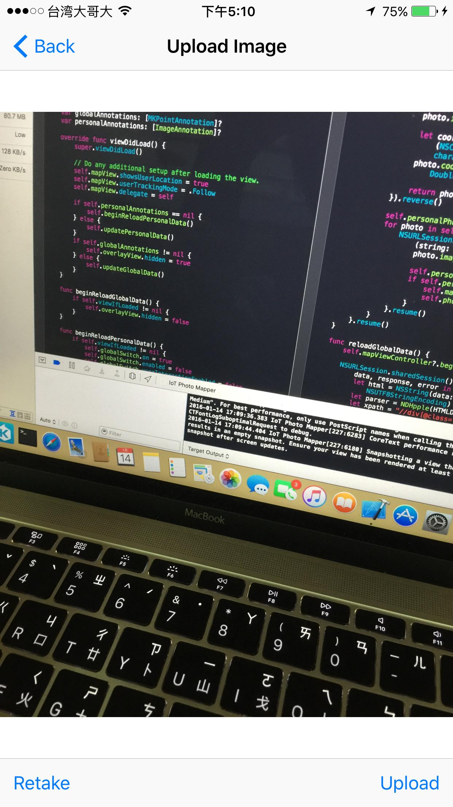 | 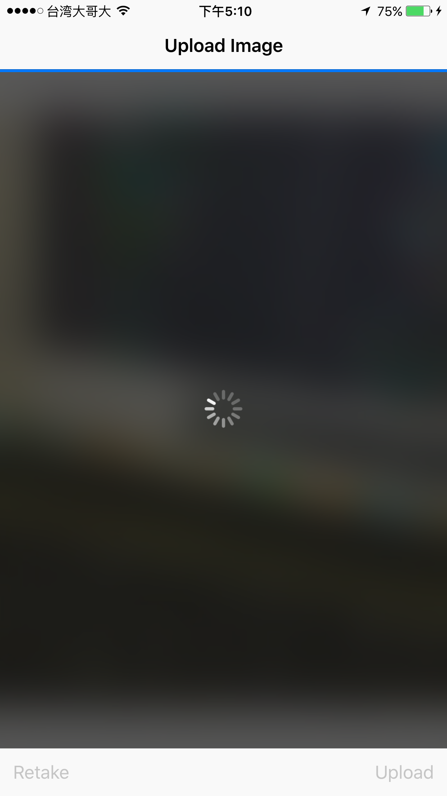 |
1. This button appears at every page of this app. When it is clicked, a model will be presented to let user to take a picture.
2. User can just capture a picture with the camera or click the button “Photo Library” to choose one from the photo library instead.
3. After an picture is either captured with camera or chosen from the photo library, this is the last opportunity to confirm whether to upload this image, retake another picture, or cancel the uploading.
4. After the uploading is confirmed, the picture will be uploaded along with current GPS location information.
| 1.Global data | Annotation detail | 2.Personal data | Annotation detail |
|---|---|---|---|
| 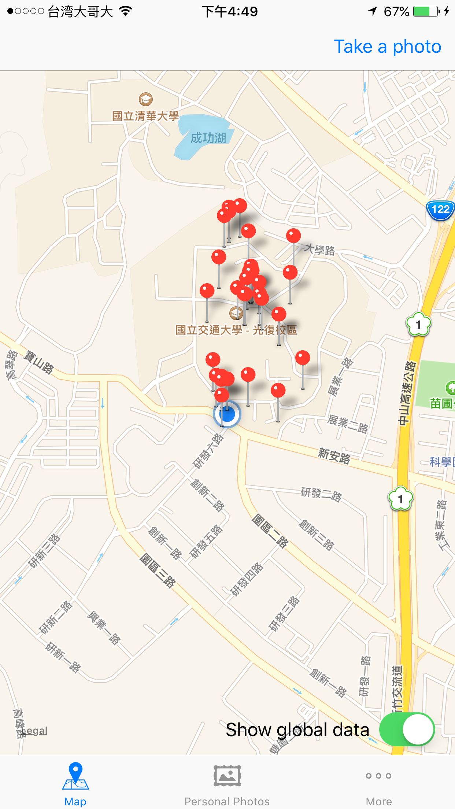 | 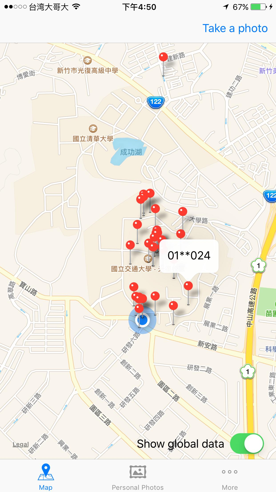 | 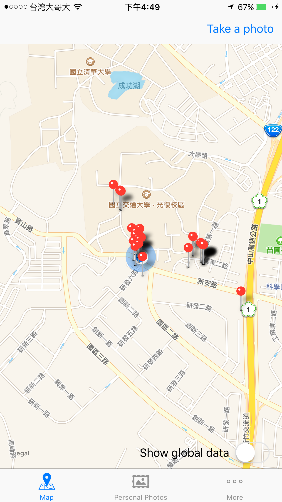 | 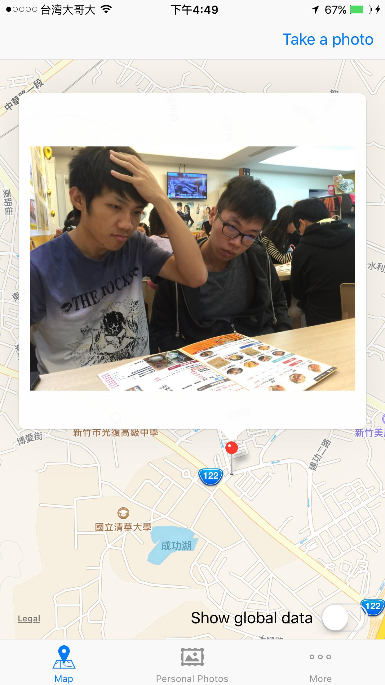 |
When the switch “Show global data” is on (by default), the map is showing last positions of all the users. When it is switched off, the map is showing positions of all photos saved in the centralized database, that is, the uploaded photos.
1. When an annotation is clicked in this mode, it can only show which user this position belongs to.
2. When an annotation is clicked in this mode, the photo taken at that position is shown.
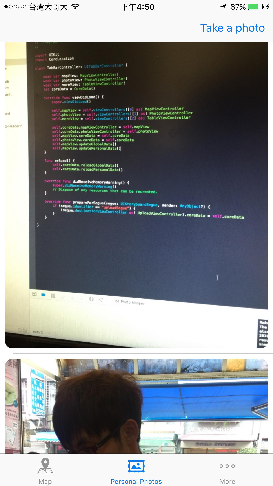
In this page, all the uploaded photos are displayed in a scroll-able view. Newer photos will show before the older.
| More | About |
|---|---|
| 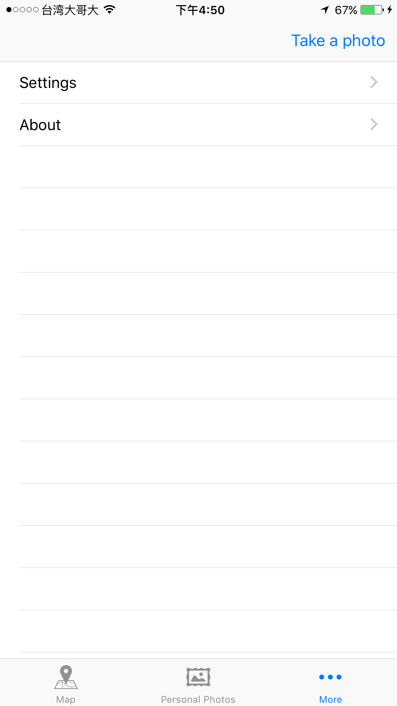 | 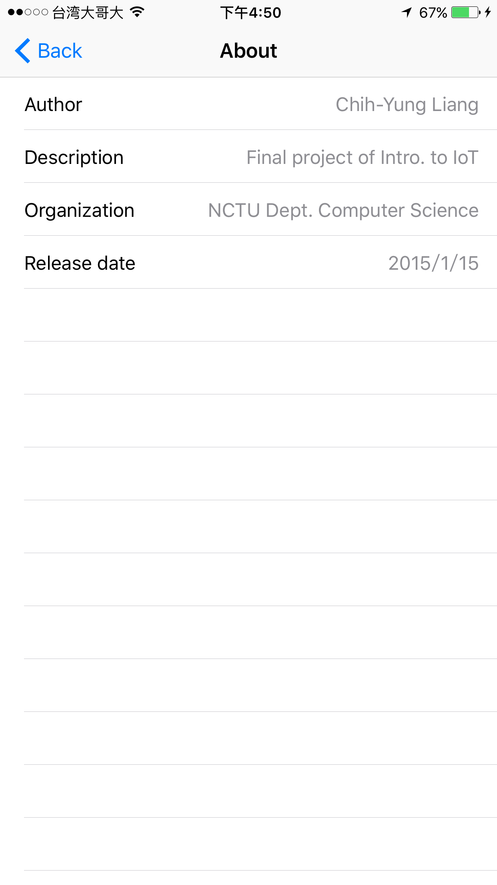 |
The “About Page“, showing some information about this app, can be access from the “More Page“.